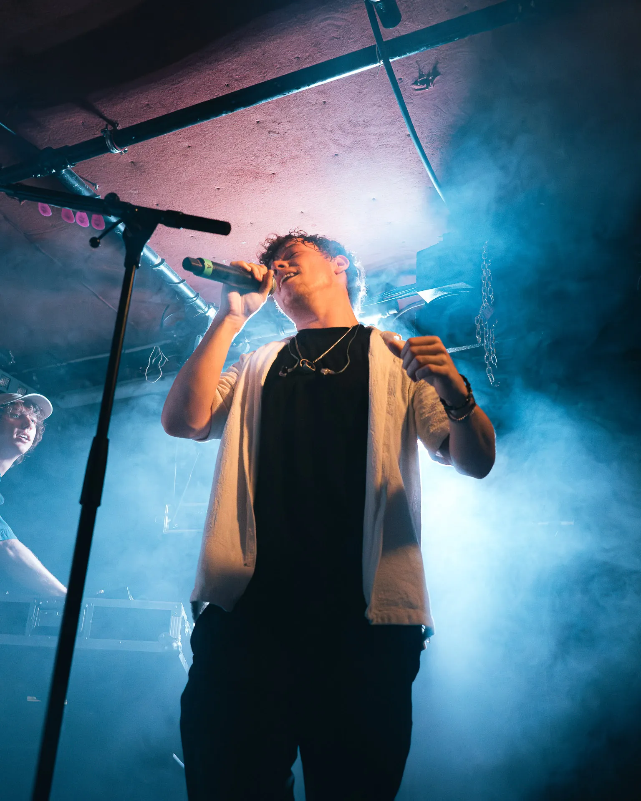

Visual Creator · Vienna / ATIndependent perspective / 01
Bilder, die bleiben.
Content, der bewegt.
Ich bin Linus. Ich erzähle Geschichten mit Fotografie, Film und digitalen Visuals. Für Menschen, Künstler:innen und Marken.
Arbeiten entdecken ↓
Live moments.
Real energy.Concert photography ↗
Real energy.Concert photography ↗
Portfolio / Curated selection
Selected work.
Ein Einblick in meine Welt.
Von der Bühne bis zum Markencontent.
Client spotlight / 2026
Foto Schneider
Produktstories, Reels und Einblicke hinter die Kulissen. Content, der einen Fotofachhandel erlebbar macht.
Alle Arbeiten ansehen ↗Client spotlight / Foto SchneiderVon Kameras.
Von Kameras.
Und Charakter.
Meine Content-Arbeit für Foto Schneider: Produktvideos, kreative Reels und echte Momente aus dem Geschäft und von Events.
Foto Schneider entdecken ↗